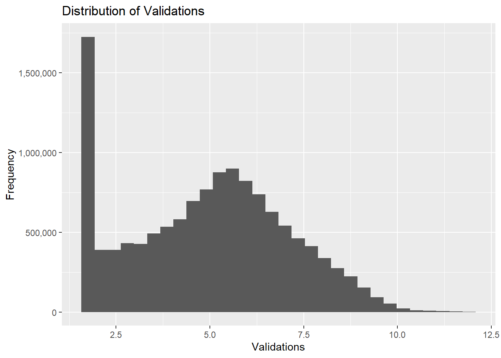

library(readr)
library(ggplot2)
library(dplyr)
library(lubridate)
library(tidyr)
library(shiny)
library(stats)
library(forecast)
library(kableExtra)report
Abstract
This report presents an in-depth analysis of ridership patterns at Île-de-France’s railway stations, spanning the years 2017 to 2023. The primary objective is to develop a comprehensive dashboard that facilitates real-time monitoring and comparison of ridership against the norm, particularly highlighting variations between regular weeks and holiday periods. To achieve this aim, we have collected extensive ridership data, geographical information of railway stations, and holiday schedules. Our exploratory data analysis will focus on four key areas: station distribution, seasonality trends, monthly fluctuations, and the impact of holidays. Additionally, we will conduct statistical tests to elaborate our observations and implement time-series forecasting techniques to anticipate future ridership trends. The resulting dashboard will empower stakeholders to make informed decisions regarding resource allocation and service optimization, ensuring the efficient operation of the railway network.
1. Import library
2. Data collection
2.1 Collecting ridership data from 2017-2022
The ridership data between 2017-2022 period from Île-de-France Railway Network can be found in: here.
Code
# Specify the folder path of data
folder_path <- "Data"
# Initialize an empty list to store the data frames
data_list <- list()
# get data set from folder
# Loop over the years from 2017->2022
for (year in 2017:2022) {
# Construct the subfolder path for the current year
subfolder_path <- paste0(folder_path, "/data-rf-", year, "/data-rf-", year)
file_names <- list.files(subfolder_path, full.names = TRUE)
# Loop over the file names and read each file
for (file_name in file_names) {
# Read the data file
data <- read.table(file_name, sep = "\t", header = TRUE)
# If the data has only one column, try reading with semicolon separator
if (ncol(data) == 1) {
data <- read.table(file_name, sep = ";", header = TRUE)
}
# Store the data frame in the list using the file path as the key
print(file_name)
data_list[[file_name]] <- data
}
}[1] "Data/data-rf-2017/data-rf-2017/2017_S1_NB_FER.txt"
[1] "Data/data-rf-2017/data-rf-2017/2017_S2_NB_FER.txt"
[1] "Data/data-rf-2017/data-rf-2017/2017_S2_PROFIL_FER.txt"
[1] "Data/data-rf-2017/data-rf-2017/2017S1_PROFIL_FER.txt"
[1] "Data/data-rf-2018/data-rf-2018/2018_S1_NB_FER.txt"
[1] "Data/data-rf-2018/data-rf-2018/2018_S1_PROFIL_FER.txt"
[1] "Data/data-rf-2018/data-rf-2018/2018_S2_NB_FER.txt"
[1] "Data/data-rf-2018/data-rf-2018/2018_S2_Profil_Fer.txt"
[1] "Data/data-rf-2019/data-rf-2019/2019_S1_NB_FER.txt"
[1] "Data/data-rf-2019/data-rf-2019/2019_S1_PROFIL_FER.txt"
[1] "Data/data-rf-2019/data-rf-2019/2019_S2_NB_FER.txt"
[1] "Data/data-rf-2019/data-rf-2019/2019_S2_PROFIL_FER.txt"
[1] "Data/data-rf-2020/data-rf-2020/2020_S1_NB_FER.txt"
[1] "Data/data-rf-2020/data-rf-2020/2020_S1_PROFIL_FER.txt"
[1] "Data/data-rf-2020/data-rf-2020/2020_S2_NB_FER.txt"
[1] "Data/data-rf-2020/data-rf-2020/2020_S2_PROFIL_FER.txt"
[1] "Data/data-rf-2021/data-rf-2021/2021_S1_NB_FER.txt"
[1] "Data/data-rf-2021/data-rf-2021/2021_S1_PROFIL_FER.txt"
[1] "Data/data-rf-2021/data-rf-2021/2021_S2_NB_FER.txt"
[1] "Data/data-rf-2021/data-rf-2021/2021_S2_PROFIL_FER.txt"
[1] "Data/data-rf-2022/data-rf-2022/2022_S1_NB_FER.txt"
[1] "Data/data-rf-2022/data-rf-2022/2022_S1_PROFIL_FER.txt"
[1] "Data/data-rf-2022/data-rf-2022/2022_S2_NB_FER.txt"
[1] "Data/data-rf-2022/data-rf-2022/2022_S2_PROFIL_FER.txt"Combine the two periods data for each year.
Code
data_years = list()
for (year in 2017:2022) {
path_file_1 = paste0(folder_path, "/data-rf-", year, "/data-rf-", year, "/", year, "_S1_NB_FER.txt")
path_file_2 = paste0(folder_path, "/data-rf-", year, "/data-rf-", year, "/", year, "_S2_NB_FER.txt")
data_file_1 = data_list[[path_file_1]]
data_file_2 = data_list[[path_file_2]]
if (year == 2022) {
names(data_file_2)[names(data_file_2) == 'lda'] = 'ID_REFA_LDA'
}
combined_data = rbind(data_file_1, data_file_2)
key = paste0(folder_path, "/data-rf-", year, "/data-rf-", year)
data_years[[key]] = combined_data
}
# Aggregate the data from 2017->2022 into one dataframe
combined_df = data.frame()
for(year in 2017:2022) {
# Get the data frame for the current year
key = paste0(folder_path, "/data-rf-", year, "/data-rf-", year)
df = data_years[[key]]
# Append the aggregated data for the current year to the final data frame
combined_df = rbind(combined_df, df)
}2.2 Collecting ridership data in the first period (first 6 months) in the year 2023
Read the CSV data file for first period of 2023. This ridership data can be found in: here.
Code
data_first_se_2023 = read_csv2("Data/validations-reseau-ferre-nombre-validations-par-jour-1er-semestre.csv",
col_types = cols(
JOUR = col_date(),
CODE_STIF_TRNS = col_integer(),
CODE_STIF_RES = col_integer(),
CODE_STIF_ARRET = col_character(),
LIBELLE_ARRET = col_character(),
lda = col_integer(),
CATEGORIE_TITRE = col_character(),
NB_VALD = col_integer()
)
)Get an overview of the data.
Code
head(data_first_se_2023)# A tibble: 6 × 8
JOUR CODE_STIF_TRNS CODE_STIF_RES CODE_STIF_ARRET LIBELLE_ARRET lda
<date> <int> <int> <chr> <chr> <int>
1 2023-06-26 800 853 568 MONTSOULT 67000
2 2023-06-26 800 853 568 MONTSOULT 67000
3 2023-06-26 800 853 568 MONTSOULT 67000
4 2023-06-26 800 853 568 MONTSOULT 67000
5 2023-06-26 800 853 595 NOINTEL MOURS 67227
6 2023-06-26 800 853 595 NOINTEL MOURS 67227
# ℹ 2 more variables: CATEGORIE_TITRE <chr>, NB_VALD <int>The image below describes the schema of the above dataset:

2.2.1 Cleaning ridership data from 2017-2022
Code
# Change the format of the date column to "day-month-year"
data_first_se_2023$JOUR = format(data_first_se_2023$JOUR, "%d/%m/%Y")
# rename the column of 2023 data to match 2017-2022 data
names(data_first_se_2023)[names(data_first_se_2023) == 'lda'] <- 'ID_REFA_LDA'
# sort the 2023 data as increasing order of the date time
data_first_se_2023 = data_first_se_2023 %>% arrange(JOUR)Combine data from 2017-2022 with 2023 data
Code
combined_df = rbind(combined_df, data_first_se_2023)Change the schema of columns for the combined ridership data (from 2017-2023)
Code
combined_df = combined_df %>%
mutate_at(vars(CODE_STIF_TRNS, CODE_STIF_RES, CODE_STIF_ARRET, ID_REFA_LDA, NB_VALD), as.integer) %>%
mutate_at(vars(LIBELLE_ARRET, CATEGORIE_TITRE), as.character)Check the missing values of each column.
Code
missing_values = colSums(is.na(combined_df))
missing_values JOUR CODE_STIF_TRNS CODE_STIF_RES CODE_STIF_ARRET LIBELLE_ARRET
0 0 8381 8381 0
ID_REFA_LDA CATEGORIE_TITRE NB_VALD
1832 0 27420 Drop rows with missing values.
Code
combined_df = combined_df %>%
filter(!is.na(CODE_STIF_RES)) %>%
filter(!is.na(ID_REFA_LDA)) %>%
filter(!is.na(NB_VALD))Check consistency of CATEGORIE_TITRE column.
Code
unique_values = unique(combined_df$CATEGORIE_TITRE)
print(unique_values)[1] "AMETHYSTE" "AUTRE TITRE" "FGT" "IMAGINE R" "NAVIGO"
[6] "TST" "NON DEFINI" "?" "NAVIGO JOUR"After checking consistency of CATEGORIE_TITRE column, we find there is anomaly data as “?” value. We need to drop this anomaly data.
Code
combined_df = combined_df %>%
filter(CATEGORIE_TITRE != '?')2.3 Collecting geographical data of railway stations in Paris
Read the geographical data. This geographical data of railway stations can be found from: here.
Code
geo_data = read_csv2("Data/zones-d-arrets.csv")
head(geo_data)# A tibble: 6 × 11
ZdAId ZdAVersion ZdACreated ZdAChanged ZdAName ZdAXEpsg2154
<dbl> <chr> <dttm> <dttm> <chr> <dbl>
1 490686 1523971-1… 2023-12-27 20:55:05 2023-12-27 20:56:37 Sycomo… 652954
2 43037 43037-602… 2014-12-29 15:31:51 2023-12-27 20:56:37 Gabrie… 653348
3 43419 1433458-1… 2014-12-29 00:00:00 2023-12-27 20:56:37 Carref… 650951
4 43989 43989-608… 2014-12-29 15:31:51 2023-12-27 20:56:37 Mairie 651785
5 48274 1469106-1… 2014-12-29 15:31:51 2023-12-27 20:56:37 Châtea… 652344
6 51037 51037-627… 2014-12-29 15:31:51 2023-12-27 11:30:52 Père C… 650853
# ℹ 5 more variables: ZdAYEpsg2154 <dbl>, ZdCId <dbl>, ZdAType <chr>,
# ZdAPostalRegion <dbl>, ZdATown <chr>The following image shows the schema of the above geographical dataset:

2.3.1 Cleaning geographical data
Change the name of ZdCId column of geodata to the same name of Id_stopping_points column from 2017-2023 data. This will be useful for join operator of these two geodata and 2017-2023 ridership data.
Code
names(geo_data)[names(geo_data) == 'ZdCId'] <- 'ID_REFA_LDA'
# change the schema of ID_REFA_LDA column from chart to int
geo_data$ID_REFA_LDA = as.integer(geo_data$ID_REFA_LDA)Sort the geodata according to the most recent update of locations. Then we remove duplicated station names.
Code
geo_data = geo_data[order(geo_data$ZdAChanged), ]
geo_data = subset(geo_data, !duplicated(ZdAName))Merge the two geodata and 2017-2023 ridership data by ID_REFA_LDA column. We only keep important columns, including longitude and latitude attributes of stopping points.
Code
joined_df = left_join(combined_df, geo_data, by = "ID_REFA_LDA")
joined_df = joined_df %>% select(1:8, 14, 15)After all the above pre-processing steps, we get overview of final-ready ridership dataset of railway stations for further analysis.
Code
head(joined_df) JOUR CODE_STIF_TRNS CODE_STIF_RES CODE_STIF_ARRET LIBELLE_ARRET
1 01/01/2017 100 110 1 PORTE MAILLOT
2 01/01/2017 100 110 1 PORTE MAILLOT
3 01/01/2017 100 110 1 PORTE MAILLOT
4 01/01/2017 100 110 1 PORTE MAILLOT
5 01/01/2017 100 110 1 PORTE MAILLOT
6 01/01/2017 100 110 1 PORTE MAILLOT
ID_REFA_LDA CATEGORIE_TITRE NB_VALD ZdAXEpsg2154 ZdAYEpsg2154
1 71379 AMETHYSTE 109 647372 6864457
2 71379 AMETHYSTE 109 647247 6864373
3 71379 AMETHYSTE 109 647503 6864496
4 71379 AMETHYSTE 109 647511 6864304
5 71379 AMETHYSTE 109 647359 6864669
6 71379 AMETHYSTE 109 647144 68644312.4 Collecting the holidays data in France
Thanks to author Etienne Côme, etc. the holiday dates data in France can be found from: here We first read the calendar data. It is important to note that we define holidays = official public holidays such as Christmas, school breaks, New Year Eve, etc.
Code
data_calendar = read.csv("Data/calendar.csv")
head(data_calendar) X date jour ferie vacances pont mois travaux_ete ferie_semaine
1 1 2015-01-01 Jeudi 1 1 0 1 0 1
2 2 2015-01-02 Vendredi 0 1 1 1 0 0
3 3 2015-01-03 Samedi 0 1 0 1 0 0
4 4 2015-01-04 Dimanche 0 1 0 1 0 0
5 5 2015-01-05 Lundi 0 0 0 1 0 0
6 6 2015-01-06 Mardi 0 0 0 1 0 0
ferie_weekend travaux_ete_semaine travaux_ete_weekend pont_semaine gratuite
1 0 0 0 0 1
2 0 0 0 1 0
3 0 0 0 0 0
4 0 0 0 0 0
5 0 0 0 0 0
6 0 0 0 0 0
greves_ratp confinement deconfinement travaux_m1_semaine travaux_m1_weekend
1 0 0 0 0 0
2 0 0 0 0 0
3 0 0 0 0 0
4 0 0 0 0 0
5 0 0 0 0 0
6 0 0 0 0 0
vacances_semaine vacances_weekend
1 1 0
2 1 0
3 0 1
4 0 1
5 0 0
6 0 02.4.1 Cleaning the holidays data
Convert the ‘date_column’ of holidays data from char to date type.
Code
data_calendar$date <- as.Date(data_calendar$date, format='%Y-%m-%d')Since the holidays data is varied in each year, we choose the holiday data in 2016 (the most updated year in the calendar data) as a defining holiday dates in France. We select the ‘date’ and ‘vacances’ fields.
Code
date_holiday = data_calendar[as.numeric(format(data_calendar$date , "%Y")) == 2016, ] %>%
select(c('date', 'vacances'))Get an overview of the final-ready holidays data.
Code
head(date_holiday) date vacances
366 2016-01-01 1
367 2016-01-02 1
368 2016-01-03 1
369 2016-01-04 0
370 2016-01-05 0
371 2016-01-06 0The holidays data will be used for estimating the impact of holidays period on the number of validations of railway stations in section 3.4.
3. Exploratory data analysis
Converting a data column to a proper format for time-series visualization
Code
joined_df$JOUR = as.Date(joined_df$JOUR, format = "%d/%m/%Y")Take the mean of the values for duplicated days. Then we select some columns for visualization.
Code
joined_df = joined_df %>%
group_by(JOUR) %>%
mutate(NB_VALD_MONTH = mean(NB_VALD, na.rm = TRUE)) %>%
select(c('JOUR', 'LIBELLE_ARRET', 'NB_VALD', 'ZdAXEpsg2154', 'ZdAYEpsg2154', 'NB_VALD_MONTH'))We extract month and year of the dataset as separate columns.
Code
joined_df$MONTH = format(joined_df$JOUR, "%m")
joined_df$YEAR = format(joined_df$JOUR, "%Y")
joined_df$DAY = format(joined_df$JOUR, "%d")3.1 Railway stations location of Paris region
Figure 1 displays the railway stations as 2D coordinates on Paris map region.
Code
df_unique <- distinct(joined_df, ZdAXEpsg2154, ZdAYEpsg2154, NB_VALD)
ggplot(df_unique, aes(x = ZdAXEpsg2154, y = ZdAYEpsg2154)) +
geom_point() +
xlab('Longtitude') +
ylab('Latitude') +
ggtitle('Unique Coordinates of each station in Paris region')
3.2 Seasonality trend
Figure 2 shows the overall trend of the number of validations of Île-de-France railway stations between 2017-2023. From Figure 2, we can see that from 2017-2020, the number of validations were high before it dropped significantly between 2020-2021; however, it started to recover from that time onwards.
Code
ggplot(joined_df, aes(x = JOUR, y = NB_VALD, alpha=0.5)) +
geom_line() +
scale_x_date(date_breaks = "1 year", date_labels = "%Y", limits = as.Date(c("2017-01-01", "2023-05-31"))) +
scale_y_continuous(labels = scales::comma) + # Format y-axis labels with commas +
labs(y = "Number of Validations") + # Add y-axis label
theme(axis.text.x = element_text(angle = 45, hjust = 1))
3.3 Monthly trend
Figure 3 illustrates the distribution of the number of validations through each month, between 2017-2023. We can also see there are a lot of outliers in 2017 plot, indicating that there is a great diverse in railway station usage.
Code
ggplot(joined_df, aes(x = MONTH, y = NB_VALD_MONTH)) +
geom_boxplot() +
facet_wrap(~YEAR, scales = "free_x") +
theme(axis.text.x = element_text(angle = 90, hjust = 1))
From Figure 3, it also can be observed that in every year, August is the period that witness a quite low distributions of validations, compared to other months. It is interesting that the year 2020 and 2021 show the lowest distribution of validations, compared to other years. This phenomenon might be explaned by the Covid-19 lockdown period.
Notably, the first 6 months of 2023 indicates a very stable trend of validations.
3.3 The distributions of holiday dates in France
In this section, we plot the distributions of holiday dates in France throughout the year.
First, we create a pivot table for heatmap distribution.
Code
heatmap_data = date_holiday %>%
mutate(month = month(date), day = day(date)) %>%
select(month, day, vacances) %>%
pivot_wider(names_from = day, values_from = vacances, values_fill=0)We then convert the pivot table to a matrix.
Code
heatmap_matrix = as.matrix(heatmap_data[, -1])Finally, we plot the heatmap. Figure 4 shows the holiday dates distribution throughout the year in France
Code
heatmap(heatmap_matrix,
Rowv = NA,
Colv = NA,
col = colorRampPalette(c("white", "gold"))(100),
scale = "none",
main = "Heatmap of Vacances",
xlab = "Day",
ylab = "Month")
It can be seen that from Figure 4, the holiday dates are mostly during labor days (by the end of April and the first day of May), the school breaks (July, August), Christmas and New Year celebration (by the end of December and the first periods of January).
3.4 The impact of holidays on the number of validations
We first add another ‘day’ and ‘month’ columns to holiday data. These two columns will be used for performing join operator with ridership data.
Code
date_holiday$MONTH = format(date_holiday$date, "%m")
date_holiday$DAY = format(date_holiday$date, "%d")We perform left join between the 2017-2023 ridership data and the holiday data.
Code
# perform left join
joined_df_new = left_join(joined_df, date_holiday, by = c("DAY", "MONTH"))Then, we perform the ‘group by’ operator to group duplicated dates of the ridership data, and take the mean number of validations per day.
Code
# change the format of a column year from char to int for the mean calculation
joined_df_new$YEAR <- as.integer(joined_df_new$YEAR)
# take the the mean of NB_VALD for each day
df_validation_avg <- joined_df_new %>%
group_by(JOUR) %>%
summarize(AVG_NB_VALD = mean(NB_VALD), YEAR = mean(YEAR), VACANCES = mean(vacances))Finally, we create a line plot between 2017-2023 for the mean number of validations per day. Figure 5 highlights the impact of holidays on the validations
Code
ggplot(df_validation_avg, aes(JOUR, AVG_NB_VALD, color=factor(VACANCES))) +
geom_line() +
facet_wrap(~ YEAR, ncol = 1) +
scale_x_continuous(breaks = 1:12, labels = month.abb) +
labs(title = "Average validations per day") +
theme_bw()
From Figure 5, it can be seen that there is an decreasing trend in the number of validations during holidays, most notably in the years 2017, 2018, 2019 and 2022.
4. Statistical tests
In this sections, we apply simple statistical methods to validate key findings from the section 3 (Exploratory data analysis), and draw meaningful insights from the considered data.
Before applying statistical methods, we first check the distribution of validations variable.
Code
ggplot(joined_df, aes(x = NB_VALD)) +
geom_histogram() +
labs(x = "Validations", y = "Frequency", title = "Distribution of Validations") +
scale_x_continuous(labels = scales::comma) +
scale_y_continuous(labels = scales::comma) 
From Figure 6, it can be seen that the distribution of validation variable is right-skewed and likely to follow a logarithm-distribution. For many hypothesis testing, it is assumed that the considered variable should follow a normal distribution (here). Therefore, we apply the log-transformation to turn it into the desired normal distribution.
Code
joined_df$NB_VALD = log(joined_df$NB_VALD)
ggplot(joined_df, aes(x = NB_VALD)) +
geom_histogram() +
labs(x = "Validations", y = "Frequency", title = "Distribution of Validations") +
scale_x_continuous(labels = scales::comma) +
scale_y_continuous(labels = scales::comma) `stat_bin()` using `bins = 30`. Pick better value with `binwidth`.
4.1 Seasonal hypothesis testing
From section 3.3, it can be assumed that the validations distribution of the year 2020-2021 are quite low compared to other years. We will conduct the T-test method (here) to validate this assumption.
Code
before_2020 = subset(joined_df, YEAR < 2020)$NB_VALD
after_2020 = subset(joined_df, YEAR >= 2020)$NB_VALDWe perform the T-test method of the above subset data with the confident level = 95%.
Code
t_test_2020 <- t.test(before_2020, after_2020)
print(t_test_2020)
Welch Two Sample t-test
data: before_2020 and after_2020
t = 120.47, df = 10035293, p-value < 2.2e-16
alternative hypothesis: true difference in means is not equal to 0
95 percent confidence interval:
0.1474408 0.1523176
sample estimates:
mean of x mean of y
5.039071 4.889192 The p-value after the T-test is less than 2.2e-16, which is essentially zero. A very small p-value indicates that the drop in validations of 2020-2021 period is happened systematically not randomly. This change can be influenced by the Covid-19 period, but this analysis is out of the scope of our project report.
4.2 School breaks hypothesis testing
We also want to see if the school breaks (during July-August) has impact on the number of validations of railway stations in Paris. We will utilize the T-test method for this hypothesis.
Code
# subset data during the school breaks
august_data <- subset(joined_df, MONTH == '08')$NB_VALD
# Subset data for other months
other_months_data <- subset(joined_df, MONTH != '8')$NB_VALDWe perform the T-test method of the above extracted subset data with the confident level = 95%.
Code
t_test_seasonal = t.test(august_data, other_months_data)
print(t_test_seasonal)
Welch Two Sample t-test
data: august_data and other_months_data
t = -84.836, df = 1040019, p-value < 2.2e-16
alternative hypothesis: true difference in means is not equal to 0
95 percent confidence interval:
-0.1943995 -0.1856198
sample estimates:
mean of x mean of y
4.756607 4.946617 In this case, the small p-value suggests that there is a systematic change (a decreasing trend) in the ridership pattern during the school breaks period.
4.3 Holidays hypothesis testing
Similar to section 4.1 and 4.2, we also apply the T-test statistical method to validate whether or not the ridership pattern is influenced by the holiday dates in France. According to section 3.4, we form a hypothesis that considers the number of validations is reduced during holidays compared to non-holiday dates.
Code
holiday_data = subset(joined_df_new, vacances == 1)$NB_VALD
non_holiday_data = subset(joined_df_new, vacances == !1)$NB_VALDWe conduct the T-test method on the two subset holiday and non-holiday dates. Note that the significance level is set to \(\alpha\) = 0.05, or confidence level \(c = 1 - \alpha\) prior the experiment.
Code
t_test_impact_holiday = t.test(holiday_data, non_holiday_data)
print(t_test_impact_holiday)
Welch Two Sample t-test
data: holiday_data and non_holiday_data
t = -76.078, df = 8273931, p-value < 2.2e-16
alternative hypothesis: true difference in means is not equal to 0
95 percent confidence interval:
-165.6048 -157.2863
sample estimates:
mean of x mean of y
929.9955 1091.4410 After the T-test experiment, the p-value obtained is less than 2.2e-16, which suggest the acceptance of our hypothesis (there is a drop in the number of validations during holiday periods).
4.3 Times-series forecasting
In this section, we use the time-series model, called HOLT-WINTERS, (here) to estimate the mean number of validations per day for railway stations. HOLT-WINTERS uses a technique called exponential smoothing, which means that it gives more weight to the recent data points and less weight to the older ones. This way, it can adapt to the changes in the time series over time.
We first create a time-series object with the index time from 2017-2023 and the values are the average number of validations per day.
Code
# Get the start and end dates
start_date <- min(df_validation_avg$JOUR)
end_date <- max(df_validation_avg$JOUR)
# Create a time series object using the AVG_NB_VALD column
ts_data <- ts(df_validation_avg$AVG_NB_VALD, start = c(year(start_date), month(start_date)), end = c(year(end_date), month(end_date)), frequency = 365)We then try to estimate the actual values of validations trend.
Code
ts_data_estimated = HoltWinters(ts_data, beta=FALSE, gamma=FALSE)We forecast future validations using the estimated validations trend. In this case, we aim to forecast the mean validations for the next 365 days.
Code
forecast_data = forecast(ts_data_estimated, h=365)Finally, we visualize the actual validation trend, the estimation, and the future values for the next 365 days.
Code
plot(forecast_data, col='blue', pch = 16, lty = "dashed", xlab = "Time", ylab = "Mean validations per day")
points(ts_data, col='orange', pch = 16, cex = 0.4, lty = "dashed")
legend("topleft", legend = c("Estimated", "Actual"), col = c("blue", "orange"), pch = 16, lty = c(0, 1), cex = 0.8)
In Figure 8, the 80% prediction interval are the blue shaded area, while the 95% prediction interval are the grey area. It can be seen that railway network’s ridership trend expect to have around 900-1500 validations per day as it approaches to the last 6 months of 2024.
5. Conclusion
In conclusion, this report has delved into the ridership patterns of Île-de-France’s railway stations, providing a comprehensive overview of passenger trends from 2017 to 2023. The statistical tests suggest that there is a systematic change (a decreasing trend) in the ridership pattern during the holiday periods in France. Also, based on the HOLT-WINTERS time-series model, it is expected that the Île-de-France’s railway stations continue to recover after the 2020-2021 drop in railway usages, and it is estimated to have around 900-1500 validations per day by the end of 2024. Finally, the interactive dashboard for key insights visualization can be found in the github of the project.